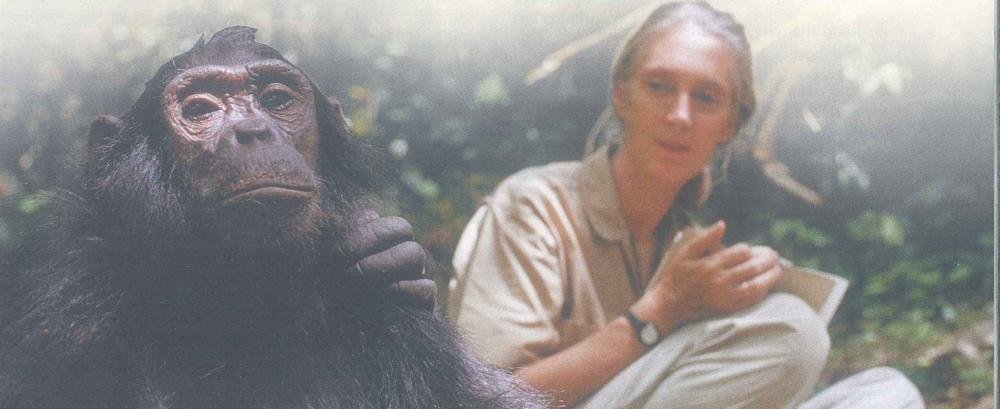
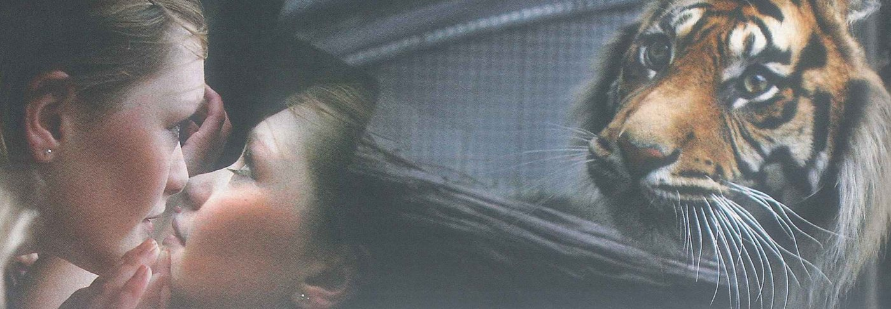
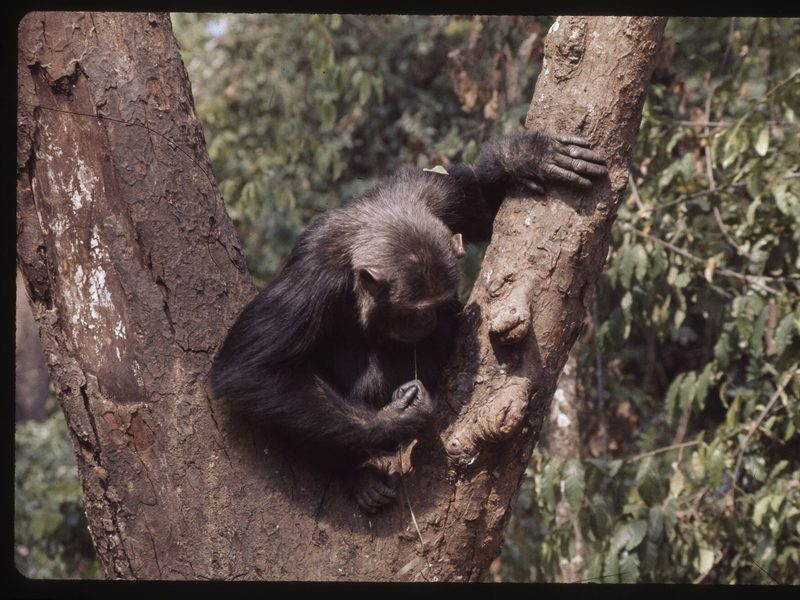
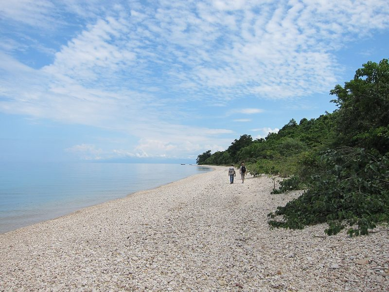
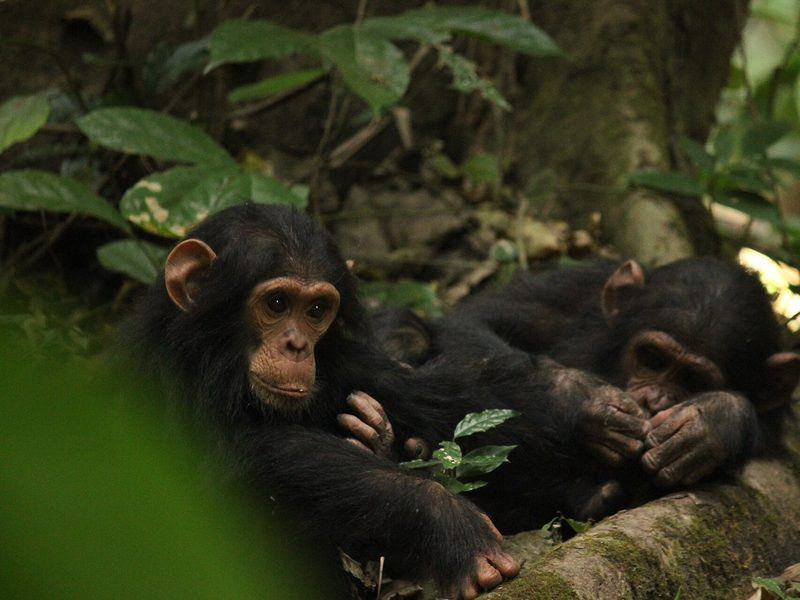
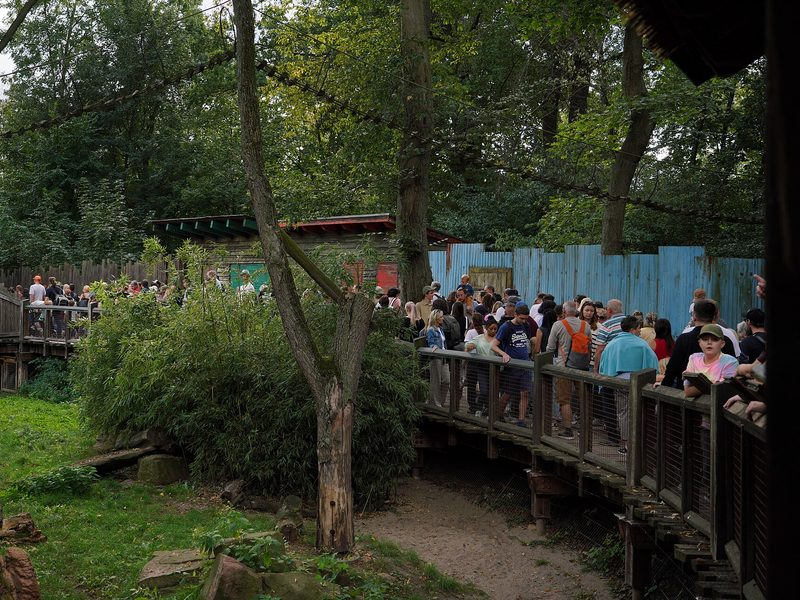
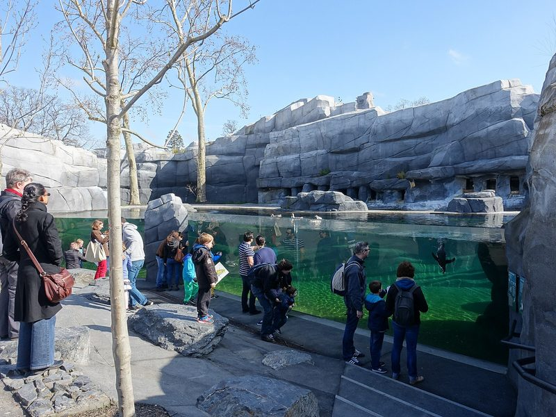

Aims of the lesson & Lead-in
Aims of the lesson
After these four periods, you should be able to:
- Recall the chunks of the 4 groups: studying wild animals, habitats and conservation, starting things, finding a solution.
- Understand the key events of Jane Goodall’s life in Gombe from the article The life of Jane Goodall.
- Recognise the four patterns of start (+ noun, + to-infinitive, + -ing, no object) and start used as a noun.
- Recognise the expressions that name a problem, put an idea forward and answer it.
- Skim, scan and read closely a biography and a news story: true, false or not in the text?
- Follow the zoo meeting on Track 98: who suggests what, and why each idea is accepted or turned down.
- Suggest solutions with How about …? · Why don’t we …? · What if you …? and answer them politely, with a reason.
- Role-play a meeting in a group of four: state the problem, discuss each suggestion, agree on a plan.
- Describe and evaluate, with the 7-step frame, an animal from your own experience (card A) or a film about nature (card B).
- Write one problem–solution paragraph, frame by frame, on wild animals that lose their forest home.
- Care about animal conservation and the environment, and stay open to views on zoos that differ from yours.
- Work with respect in pairs and groups: listen, build on a partner’s idea, disagree politely.
Lead-in 1 · Forests, chimpanzees and zoos: look, guess and react

- Question 1‘Describe the two figures in the photo. What is each one doing?’
- Question 2‘How close is the woman to the chimpanzee? Why doesn’t it run away, do you think?’
- Question 3‘What are your favourite animals? Explain why.’ (SB 12c Ex 1)
Model answer
In front there’s a big adult chimpanzee with a hand on its chest, gazing up at something we can’t see. Behind it, a grey-haired woman is crouching on the ground with a notebook, watching quietly. She’s barely two metres away, so I’d say the animal knows her well and isn’t afraid of her at all. My favourite animals are dogs: ours always noticed when I’d had a bad day before anyone else in the family did.

- Question 1‘What is on each side of the glass? Describe the faces you can see.’
- Question 2‘How do you think the tiger feels? How do the women feel?’ (SB 12d Ex 1)
- Question 3‘Who is really watching whom in this photo?’
Model answer
On the left, two young women have pushed their faces right up to the glass, and on the right a tiger is staring back from a few centimetres away. They look thrilled and a little nervous, as if they can’t quite believe how close it is. The tiger seems calm, but it could be bored, or maybe it’s wondering whether they’d make a decent lunch. Honestly, I think the tiger is the one doing the watching here.

- Question 1‘What is this chimpanzee doing with the grass?’
- Question 2‘Why would scientists be surprised to see an animal use a tool like this?’
- Question 3‘Can you name another animal that uses tools? What does it do with them?’
Model answer
It’s sitting in the fork of the tree with a thin stem of grass in its hand, probably a tool for fishing insects out of a nest. People used to believe that only humans made and used tools, so a photo like this moves the line between us and other animals. I once watched a clip of sea otters floating on their backs and cracking shells open with a stone.

- Question 1‘Describe the shore. What is it made of, and what grows behind it?’
- Question 2‘You arrive here by boat with a tent, a few clothes and a cup. What do you do first?’
- Question 3‘Could you live in a place like this for months with no phone signal? Why? / Why not?’
Model answer
The beach is covered in small white pebbles, the water is flat and clear, and thick green forest comes right down to the shore. If I landed here with almost nothing, I’d put the tent up well away from the water and then go looking for something to drink. A few months wouldn’t scare me. On our last field exercise we had no signal for a week, and I slept better than I ever do in the dormitory.

- Question 1‘How old do you think these two are? What are they doing?’
- Question 2‘What can you read in the face of the chimpanzee on the left?’
- Question 3‘What would happen to young chimpanzees like these if their mother died?’
Model answer
They look quite young, two or three years old maybe, and they’re lying on a mossy log having a rest. The one on the left is looking straight at the camera, calm and a bit curious, while the other one has its hands up near its mouth. Without a mother, a chimp that small probably wouldn’t last long, because she carries it, feeds it and shows it what to eat. Someone would have to take it somewhere safe and raise it.
- Question 1‘What happened to this hillside?’
- Question 2‘Who do you think cut the trees down, and why?’
- Question 3‘Where do the birds and animals that lived here go now?’
Model answer
Every tree on this slope has been cut, and all that’s left are grey stumps in the grass, plus one little evergreen trying to grow between them. Maybe a company wanted the wood, or local families needed the land for crops or cattle. The animals have lost their home, so the lucky ones find another forest and the rest probably don’t make it. It reminds me of the bare hills we drove past on a cadet trip up north.

- Question 1‘Where are these people, and what do you think they are waiting to see?’
- Question 2‘Is this a good day for the zoo? How can you tell?’
- Question 3‘What could a zoo do to make visitors come back again and again?’
Model answer
They’re packed onto a wooden walkway in a zoo, between tall trees and a blue fence, probably waiting their turn to look down into an enclosure. It’s clearly a great day for the zoo: every one of those people has bought a ticket, and the queue stretches back out of the picture. To bring them back, I’d change something every few months, like a new baby animal, a feeding show or late opening in the summer.

- Question 1‘What can you see swimming under the water? Who is watching it?’
- Question 2‘Why do you think the zoo built rocks and a deep pool instead of a small cage?’
- Question 3‘Do animals in a place like this have a good life? What would change your mind?’
Model answer
There’s a small black-and-white bird under the water, a penguin I think, and families with kids are watching it through a huge glass wall. The rocks and the deep pool make it feel a bit more like a real coastline, so the birds can swim and dive properly. I’d say they have a fairly decent life. I’d change my mind, though, if I saw one swimming the same tight circle all day, because that’s usually a sign of stress.
Lead-in 2 · Discoveries, zoos and new starts: agree or disagree?
1 · You don’t need a university degree to make an important scientific discovery.
Model answer
I’d agree. Our microbiology lecturer loves telling us that Antonie van Leeuwenhoek sold cloth for a living when he first saw tiny living things through lenses he had made himself. These days, though, you’d struggle to get a laboratory or any funding without a degree.
2 · Zoos do more good than harm.
Model answer
I’m not sure, honestly. A good zoo breeds animals that are close to dying out and gets kids interested in them. But I once saw a bear at a roadside tourist stop pacing up and down a concrete cage for hours, and that did nobody any good.
3 · One person can change the way a whole country protects animals.
Model answer
Yes, if that person is stubborn enough. Someone who keeps talking to journalists and officials for years can turn a quiet problem into news, and once it’s news, new laws often follow. Without local people on their side, though, they won’t get very far.
4 · It’s never too late to start learning something new.
Model answer
Completely agree. My grandfather got his first smartphone at seventy-five so he could video-call my cousin in Germany, and now he sends the family group more photos than anyone. It took him longer than it would take a teenager, but he got there in the end.
5 · In a meeting, the best idea usually comes from the discussion, not from the boss.
Model answer
It depends on the meeting. In an emergency on the ward, one person has to decide fast, and a long talk can cost a patient time. When there’s no rush, though, three people building on each other’s ideas usually come up with something better than the boss alone.
6 · Big companies should pay to protect wild animals.
Model answer
I agree, especially the ones whose farms or factories take land from forests. If a firm makes money from clearing trees, it ought to pay for new ones and for the animals that lose their homes. A logo on a sign by the elephant house isn’t enough on its own.
- I’d go along with that, because …
- From what I’ve seen, …
- That’s true up to a point, but …
- I’m not sure I agree. For one thing, …
- It really depends on whether …
Lead-in 3 · Read · SB p. 148 · Animals have nowhere to go
Read the newspaper extract and choose the best answer (SB p. 148 Ex 2)
The city’s zoo is going to close in six months’ time if the city council cannot solve the problem of low visitor numbers and lack of money. The zoo manager is worried about the animals at the zoo. ‘If the zoo closed, they wouldn’t be able to go back into their natural habitat. We’d have to find them a new home.’
- Do you ever visit zoos? Why? / Why not?
Model answer · yes
Yes, about once a year, usually when my little cousins come to stay in the city. Watching their faces when they see an elephant for the first time is better than the elephant itself. I always end up reading every information board, too.
Model answer · no
Not any more. The last time I went, the monkeys were in tiny cages, shaking the bars, and I felt sorry for them all afternoon. I’d rather watch a good wildlife film, or spend a day in a national park where the animals at least have room to move.
- I go about … a year, mostly when …
- What I like most is …
- What puts me off is …
- I’d rather … than …
Lead-in 4 · Your chunks so far: how many do you already know in each group?
What does a scientist do to learn about animals in the wild, and how does the work become famous?
Why do animals lose their homes, and what can people do to protect them?
Which phrases do you know with start, and for the big moments in a life, like leaving home?
A business is losing money. Which phrases help you explain the problem and suggest a way out?